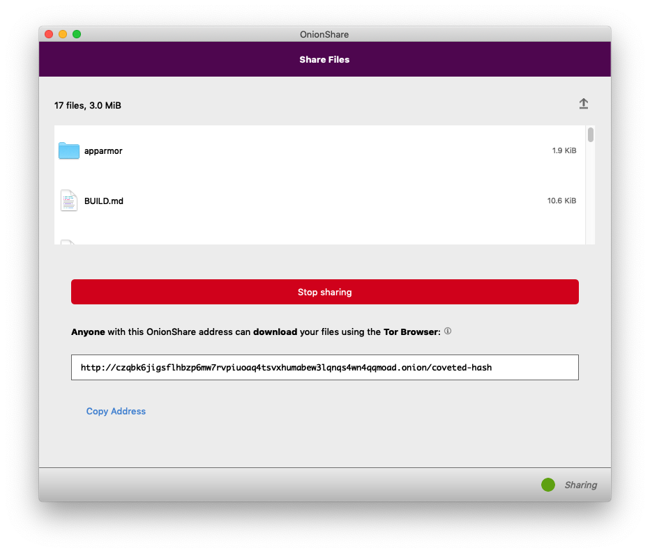

OnionShare 2 adds anonymous dropboxes, supports new Tor addresses, and is translated into a dozen new languages
After nearly a year of work from a growing community of developers, designers, and translators, I'm excited that OnionShare 2 is finally ready. You can download it from onionshare.org.
OnionShare is an open source tool for securely and anonymously sending and receiving files using Tor onion services. It works by starting a web server directly on your computer and making it accessible as an unguessable Tor web address that others can load in Tor Browser to download files from you, or upload files to you. It doesn't require setting up a separate server, using a third party file-sharing service, or even logging into an account.
Unlike services like email, Google Drive, DropBox, WeTransfer, or nearly any other way people typically send files to each other, when you use OnionShare you don't give any companies access to the files that you're sharing. So long as you share the unguessable web address in a secure way (like pasting it in an encrypted messaging app), no one but you and the person you're sharing with can access your files.
Here's a tour of some of the new parts of OnionShare 2.
- Sharing files with OnionShare
- The macOS sandbox
- Next generation onion services
- OnionShare doesn't zip if you share just one file
- OnionShare addresses are ephemeral by default
- Receiving files with OnionShare
- Only open things from people you trust, or if you know what you are doing
- Public OnionShare addresses
- Running an anonymous dropbox
- OnionShare in your language
Sharing files with OnionShare
Here's what OnionShare 2 looks like. When you first open it, it connects to the Tor network.
Once you're connected, you're in the "Share Files" tab (I'll talk more about the new "Receive Files" tab below).
To securely and anonymously share files with someone, just drag and drop the files into the OnionShare window. Alternatively, you can click the "Add Files" and "Add Folder" buttons to browse your filesystem.
The macOS sandbox
In Windows and Linux there's just a single "Add" button that lets you select both files and folders. The reason for two separate buttons in the macOS version is a bit complicated, but boils down to a cool new security feature: The macOS sandbox is turned on in OnionShare 2, which means that even if someone manages to exploit a vulnerability in OnionShare to try to hack your computer, they still won't be able to access your data or run programs on your computer without first escaping the sandbox.
I've dragged all of the files that make up the OnionShare source code into the window. Now, to make them accessible to someone else, I just click "Start sharing".
Next generation onion services

After clicking the button, I wait a few seconds, and then OnionShare gives me an unguessable Tor address to share. This is also new in OnionShare 2: By default, it uses next generation Tor onion services, also known as v3 onion addresses. These are onion addresses that look like lldan5gahapx5k7iafb3s4ikijc4ni7gx5iywdflkba5y2ezyg6sjgyd.onion, as opposed to the old v2 kind, that look like elx57ue5uyfplgva.onion.
v3 onions are much more secure than v2 onions for a variety of reasons, but they can be a bit unwieldy and hard to type (for example, if you're using OnionShare to move files between two computers that are both in front of you). You can still use v2 onion addresses if you want by going into Settings and choosing "Use legacy addresses".
Also, you might notice that the OnionShare address is using HTTP and not HTTPS, but this is actually perfectly fine. HTTPS adds a layer of encryption between a web browser and a web server, but Tor onion services are already end-to-end encrypted, so HTTPS is not necessary (it's also not feasible without browser warnings: Let's Encrypt doesn't sign HTTPS certificates for .onion sites). Unlike loading normal websites in Tor Browser, when you load onion websites, there is no Tor exit node that could spy on the traffic -- all of the traffic stays within the Tor network.
Now, I need to send this web address to my friend who I'm sharing files with. The easiest way to do this securely is to use an encrypted messaging app like Signal Desktop, Wire, Keybase, or iMessage -- or, if you're oldschool, Jabber/OTR. If the files you're sharing aren't especially sensitive, you can also share this web address in a way that is easily spied on but might be more convenient, like in a Facebook, Twitter, Google Hangouts, Slack, or Discord message, or in an email.
My friend then opens Tor Browser and loads the OnionShare address I sent her. She sees a website with a list of the files I'm sharing, and a "Download Files" button.
The key thing to understand about how OnionShare works is that this website is hosted directly on my laptop, not on a server in a data center somewhere. If I suspend my laptop, that link won't work anymore. If I close OnionShare before the files have been downloaded, then that Tor web address simply disappears from the internet. Because of this, OnionShare always takes place in real-time -- you and the person you're sharing files with need to both be online at the same time.
OnionShare doesn't zip if you share just one file
My friend then downloads the files, which are automatically zipped up. In this case, the zip file is called onionshare_snwga4.zip (the last part of the filename is random), and when she unzips it, she can see a copy of the OnionShare source code I sent. A new feature in OnionShare 2 is that if you share just a single file, it no longer zips it up (but still compresses it with gzip, built into the HTTP protocol).
Back on my computer, OnionShare automatically stopped sharing the moment the files finished sending -- and when this happened, the OnionShare address completely disappeared from the internet, never to exist again.
OnionShare addresses are ephemeral by default
OnionShare addresses are ephemeral, and intended for one-time use. (For example, if someone sends you an OnionShare address in a Twitter DM, and a few minutes later you load it and download the files, that address won't exist anymore in the future. If anyone ever gains access to your Twitter DM history, that OnionShare address will no longer work.)
As you can see, after my friend finished downloading the files I sent her, that OnionShare address ceased to exist.
This is the default behavior of OnionShare, but you might want to use OnionShare to send files to a group of people, not just one person, in which case you don't want it to be ephemeral. In this case, you can uncheck "Stop sharing after files have been sent" in the Settings, and then multiple people can download your files, and you'll continue sharing until you manually click "Stop sharing" or close OnionShare.
Receiving files with OnionShare
All of this is, more or less, how OnionShare has always worked. But the "Receive Files" tab is brand new to OnionShare 2. And it's still just the beginning -- we have plans for adding more tabs to OnionShare in the future, such as a static website sharing tab.
When you use OnionShare to receive files, you turn your computer into an anonymous dropbox -- I like to think of it is a super lightweight version of SecureDrop that anyone can run on their own laptop, for free, without needing to set up any infrastructure or do any systems administration. (However, it's not as robust, or secure, as SecureDrop, which enforces isolated environments in a way that OnionShare can't.)
A few seconds after I clicked "Start Receive Mode", OnionShare gave me an unguessable Tor address, which I share with my friend the same way I did with the share mode address. But this time, instead of me sending files to her, she can send files to me, and all she needs is Tor Browser -- she doesn't need OnionShare herself.
If I publish this OnionShare address, anyone can send files to me, without me having any way to know who they are (because they'll be using Tor), and in a way that is end-to-end encrypted, so eavesdroppers spying on either of our networks can't access the files, or even realize that we're using OnionShare. To network eavesdroppers, all they'll be able to tell is that we're both using Tor.
My friend simply clicks Browse, finds the files she wants to send, and clicks "Send Files".
Over in OnionShare on my computer, I can see the status of all of the files that I'm receiving. Because OnionShare uses Tor onion services, I don't actually have any way of knowing who is sending files to me -- if I want to make it so only very specific people can send me files, I need to securely share the OnionShare address to only those people. My computer will continue to act as an anonymous dropbox until I click "Stop Receive Mode", or close OnionShare. And, just like with share mode, if I suspend my laptop, the OnionShare address stops working.
The files that I receive get saved to ~/OnionShare, and they're automatically organized by date and time.
Only open things from people you trust, or if you know what you are doing
Now that you know how the "Receive Files" tab works, be very careful with it, and make sure to take the prominent warning to heart:
Some files can potentially take control of your computer if you open them. Only open things from people you trust, or if you know what you are doing.
All of the warnings about not opening email attachments apply just as much here. In this example, I received gimp-2.10.8-x86_64-2.dmg, which is an installer for the open source image editing software GIMP. But, it could easily be a modified version of that installer that has malware hidden inside. And if someone sends you .docx or .pdf files, they could contain malware that could try to hack you through a vulnerability in Microsoft Word or Adobe Reader. How to safely open files you receive is outside of the scope of OnionShare. Use this feature with caution.
Public OnionShare addresses
OnionShare 2 has a new feature: Public mode. But before explaining what it does, first I'll explain how OnionShare addresses work without it.
By default, OnionShare addresses look http://[tor-address].onion/[slug], where the slug is two random words out of a list of words 7,776 words (technically, this is a 2-word diceware passphrase).
The idea is that if an attacker could figure out the tor-address part of the address, they still can't download the files you're sharing, or upload files to your computer, without first knowing the slug. The slug is, essentially, a password. (This is less important when using v3 onion services. The old v2 onion services have a known issue where, if the onion connection happens to get facilitated by a malicious Tor node, that node could learn the tor-address part. This is one of the reasons that v3 onions are more secure.)
But the slug is only two words, so what stops the attacker from guessing it, by guessing every possible 2-word slug? The wordlist that OnionShare uses is public, after all.
OnionShare counts how many 404 errors (file not found web requests), and on the 20th 404 error, it assumes that someone it trying to guess the slug and automatically stops the server.
This gives the attacker 20 chances to guess the two words correctly. Because the words are chosen from a list of 7,776 words, that means there are 7,776^2, or over 60 million, possible slugs. Which basically means that if an attacker tries to guess the slug, they have a 0.00003% chance of getting it right within their only 20 chances, and a 99.99996% chance of failing, and forcing OnionShare to stop sharing.
This works great, but what if you want anyone to be able to load your OnionShare address?
For example, let's say you want to anonymously publish some files. You disable the "Stop sharing after files have been sent" setting, drag the files into OnionShare, start sharing, and tweet the OnionShare address. It turns out that anyone on the internet that sees the tweet can force your server to stop just by making 20 404 errors. (This situation actually happened, by the way, and their server kept shutting down because people kept making 404 errors.)
This is the use case that public mode was built for. If you want to publicly share an OnionShare address, just go to Settings and check the box next to "Public mode". When you start sharing, the OnionShare address will look like http://[tor-address].onion/, without the slug, and the server will remain up no matter how many 404 errors it gets.
Running an anonymous dropbox
You've seen receive mode, which is great for allowing people to privately send you files. But if you want to allow anyone to privately send you files, there are a few settings you'll want to consider using.
First, you'll definitely want to enable public mode.
Second, you'll also want to go into Settings and enable "Use a persistent address". With this setting, when you stop an OnionShare server and then start it again, you'll get this exact same onion address as you had last time. This gives you the flexibility to, for example, reboot your computer and start OnionShare again, without having to switch OnionShare addresses.
And finally, you may want to run your anonymous dropbox on a headless Linux server, rather than your normal daily workstation. OnionShare comes with two binaries, onionshare (the command line version) and onionshare-gui (the graphical version). Both of them share the same configuration file -- in Linux, this is in ~/.config/onionshare/onionshare.json. So, using the graphical version of OnionShare, choose all of the settings that you'd like, and then copy onionshare.json to your server, and run OnionShare like this:
$ onionshare --receive
OnionShare 2.0 | https://onionshare.org/
Connecting to the Tor network: 100% - Done
Setting up onion service on port 17612.
* Running on http://127.0.0.1:17612/ (Press CTRL+C to quit)
Files sent to you appear in this folder: /home/user/OnionShare
Warning: Receive mode lets people upload files to your computer. Some files can potentially take control of your computer if you open them. Only open things from people you trust, or if you know what you are doing.
Give this address to the sender:
http://v2oxpolhvyd3kh44drt6gtz57v7wwun2twddcw3xhim2kgu2vvcewvqd.onion
Press Ctrl+C to stop the server
127.0.0.1 - - [18/Feb/2019 10:48:04] "GET / HTTP/1.1" 200 -
127.0.0.1 - - [18/Feb/2019 10:48:06] "GET /static/css/style.css HTTP/1.1" 200 -
127.0.0.1 - - [18/Feb/2019 10:48:07] "GET /static/js/receive-noscript.js HTTP/1.1" 200 -
127.0.0.1 - - [18/Feb/2019 10:48:07] "GET /static/js/receive.js HTTP/1.1" 200 -
127.0.0.1 - - [18/Feb/2019 10:48:07] "GET /static/js/jquery-3.3.1.min.js HTTP/1.1" 200 -
127.0.0.1 - - [18/Feb/2019 10:48:07] "GET /static/img/logo.png HTTP/1.1" 200 -
127.0.0.1 - - [18/Feb/2019 10:48:08] "GET /static/img/logo_large.png HTTP/1.1" 200 -
127.0.0.1 - - [18/Feb/2019 10:48:10] "GET /static/img/favicon.ico HTTP/1.1" 200 -
Feb 18, 10:48AM: Upload of total size 102.1 KiB is starting
=> 101.9 KiB 2016_tax_return.pdf
Received: /home/user/OnionShare/2019-02-18/10.48.18/2016_tax_return.pdf
127.0.0.1 - - [18/Feb/2019 10:48:20] "POST /upload-ajax HTTP/1.1" 200 -
127.0.0.1 - - [18/Feb/2019 10:48:21] "GET /static/img/ajax.gif HTTP/1.1" 200 -
OnionShare in your language
Finally, one of the things I'm most excited about OnionShare 2 is that it has now been translated into twelve new languages, making OnionShare accessible to a considerable swath of humanity. Some of the major languages that OnionShare 2 is translated in include Spanish (400 million native speakers), Portuguese (215 million), Russian (170 million), and Japanese (130 million). (These numbers come from Babbel magazine.)
The new languages include: Bengali (বাংলা), Catalan (Català), Danish (Dansk), French (Français), Greek (Ελληνικά), Italian (Italiano), Japanese (日本語), Persian (فارسی), Brazilian Portuguese (Português Brasil), Russian (Русский), Spanish (Español), and Swedish (Svenska), and more languages will be included in the future. If you're a native speaker of a non-English language and are interested in contributing to OnionShare, you can find instructions for helping on the wiki.
I hope you like OnionShare 2!